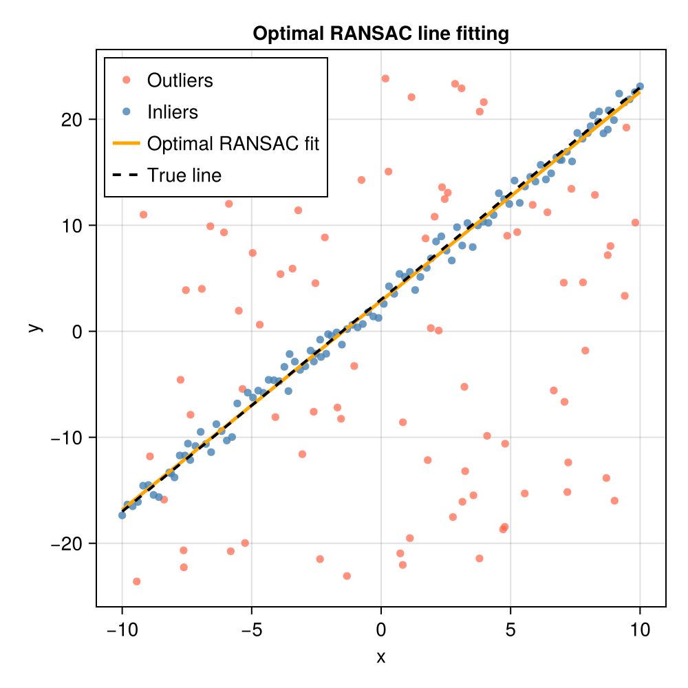

Optimal RANSAC
Background
Optimal RANSAC is a repeatable variant of the RANSAC algorithm introduced by Hast et al. (2013). Standard RANSAC is inherently non-deterministic: because it selects random minimal samples, two runs on the same data can find different inlier sets, which is problematic when the algorithm is embedded in a larger pipeline that must be reproducible. Optimal RANSAC addresses this by augmenting the standard hypothesis-and-verify loop with three iterative refinement steps that steer the search toward the global optimal inlier set, making repeated convergence to the same result much more likely than in the standard RANSAC algorithm.
The algorithm
Optimal RANSAC shares its outer structure with standard RANSAC but, crucially, replaces the single scoring step with three tightly coupled sub-procedures whenever a candidate hypothesis yields more than a small number of tentative inliers.
1. Resample (Algorithm 2)
A random subset of up to a quarter of the current tentative-inlier set is drawn and a new model is fitted to that subset. The new model is then scored against the full dataset using a (optionally wider) search tolerance $t_{\mathrm{search}}$. If this produces a larger inlier set the resampling loop restarts from the expanded set; otherwise it tries up to 8 different subsets before returning. This is directly inspired by the Local-Optimisation step of LO-RANSAC (Chum et al., 2003; Chum et al., 2004) but is triggered more aggressively: whenever a promising hypothesis is found rather than only after a global best is updated.
2. Rescore (Algorithm 3)
Starting from the inlier set produced by resampling, the model is iteratively re-estimated from all current inliers and scored against all data until the inlier set stops changing or after at most 20 iterations. Using all inliers for fitting (rather than only the minimal sample $s$) exploits the fact that many problems admit a least-squares fit from more than $s$ points, producing a model that is better aligned to the true structure.
3. Pruneset (Algorithm 4) — optional
When a wider search tolerance $t_{\mathrm{search}} > t$ is used alongside a distfn input that returns per-point residuals, a final pruning pass removes any inlier whose residual exceeds the tight tolerance $t$. The most extreme inlier is removed one at a time and the model is re-estimated after each removal, so that the final model is always consistent with the retained inliers.
Stopping criterion
Instead of the adaptive $N$ iterations formula used by standard RANSAC, Optimal RANSAC terminates when the same inlier-set size is re-discovered a specified number of times in succession (min_consensus, default 2). The refinement steps make it very unlikely to find the same size by chance unless it corresponds to the true optimal set, so this simple criterion works surprisingly well in practice. This is the main convergence criterion for Optimal RANSAC; increasing min_consensus is recommended if the default value does not reliably reproduce the same inlier set and is typically most necessary when the tentative number of inliers per trial is low (this information is shown if you set the keyword argument verbose = true).
When to use Optimal RANSAC
The runtime of Optimal RANSAC is generally longer than standard RANSAC as it typically makes more calls to distfn and fittingfn per data trial. Additionally, fittingfn must support overconstrained problems which require more computation to solve than minimally-constrained problems as expected in standard RANSAC, so calls to fittingfn may be much more expensive if your dataset is large. For small problems (e.g., simple line fitting) this additional cost is often negligible and Optimal RANSAC may be preferred for its robustness and repeatibility. Optimal RANSAC may be preferrable to standard RANSAC when:
- repeatability is important regardless of RNG state (standard RANSAC is repeatible given the same seeded RNG, but generally not otherwise, while Optimal RANSAC is designed to be repeatible regardless of RNG state),
fittingfnsupports overconstrained fits with more thanspoints (required for the rescoring step),- the inlier fraction is very low (well below 5%), making RANSAC's standard adaptive stopping criterion unreliable, or
- a high-precision final inlier set is needed (using the two-tolerance mode with
t_search > t).
API
ConsensusFitting.optimalransac — Function
optimalransac(x, fittingfn, distfn, s, t;
rng = Random.default_rng(),
t_search = t,
degenfn = _ -> false,
verbose = false,
max_data_trials = 100,
max_trials = 1000,
min_inliers = 5,
min_consensus = 2)Robustly fit a model to data using the Optimal RANSAC algorithm of Hast et al. (2013), which extends standard RANSAC with three refinement steps (resample, rescore, and optionally pruneset) to produce a repeatable result.
Arguments
x: Data array of size[...] × N(arbitrary dimensionality per data point is supported, but the last dimension must correspond to the number of data points). Commonly will bed × N.fittingfn: Function that fits a model to a sample of data points. Must have the signatureM = fittingfn(x). Unlikeransac, this function is called with subsets of varying size — from the minimalspoints (outer sampling) up to the full current inlier set (rescore step). It must therefore implement a least-squares or otherwise over-determined fit when given more thanspoints. The function should return an empty collection when it cannot produce a valid model (e.g., degenerate input). It may also return a collection of multiple candidate models; in that casedistfnis responsible for selecting the best one.distfn: Function that scores a model against all data points and returns aNamedTuple. Must have the signaturent = distfn(M, x, t), wherent.inliersis a vector of last-dimension indices intoxfor which the residual is below thresholdtandnt.modelis the scored model. WhenMholds multiple candidate models this function should select and return the one with the most inliers viant.model. To enable the optional pruning step (Algorithm 4), the returnedNamedTuplemust also contain a keyresidualswith a non-negative vector of per-point residuals (one entry per last-dimension slice of thexpassed todistfn). Pruning is only activated when botht_search > tanddistfnprovidesnt.residuals.s: Minimum number of data points required byfittingfnto fit a model.t: Primary inlier distance threshold (used for the outer sampling step and, when pruning is enabled, as the final tight tolerance).
Keyword Arguments
rng::Random.AbstractRNG: Random number generator. Defaults toRandom.default_rng().t_search::Real: Inlier threshold used during the resampling and rescoring steps. Must satisfyt_search ≥ t. Whent_search > tanddistfnreturnsresidualsin itsNamedTuple, a pruning pass is applied after resampling to trim the result back to the tight tolerancet, yielding the highest-precision final inlier set. Defaults tot(no separate search tolerance; pruning is skipped).degenfn: Function that tests whether a minimal sample would produce a degenerate model. Must have the signaturer = degenfn(x)and returntruewhen the sample is degenerate. Defaults to_ -> false.verbose::Bool: Whentrue, prints per-iteration diagnostics. Defaults tofalse.verbose_io::IO:IOstream for verbose output. Defaults tostdout.max_data_trials::Integer: Maximum attempts to draw a non-degenerate minimal sample in the outer loop before emitting a warning. Defaults to100.max_trials::Integer: Hard upper bound on outer-loop iterations. Acts as a safety limit; the algorithm's primary stopping criterion is themin_consensusconvergence condition. Defaults to1000.min_inliers::Integer: Minimum tentative inlier count required to trigger the resampling/rescoring optimization. Defaults to5.min_consensus::Integer: Number of times the same-size inlier set must be found before the algorithm declares convergence. Defaults to2, such that the algorithm must find the same inlier count twice in a row. For small inlier sets (fewer than ≈ 30 expected inliers) the paper recommends increasing this to2or more to avoid premature termination on a sub-optimal set.
Returns
M: The model with the largest (or, with pruning, the highest-quality) inlier set found by the algorithm.inliers: Vector of last-dimension indices ofxthat are inliers toM.
Extended Help
Optimal RANSAC augments the standard hypothesis-then-verify loop with three additional refinement steps taken whenever a hypothesis yields more than min_inliers tentative inliers.
Resample (Algorithm 2 of Hast et al. (2013)) draws subsets of up to a quarter of the current tentative-inlier set, fits new candidate models, and rescores them against the full dataset. If a larger inlier set is found the loop restarts from that larger set; the procedure repeats up to 8 times per outer iteration.
Rescore (Algorithm 3) repeatedly re-estimates the model from the full current inlier set and rescores against all data until the inlier set stops changing or 20 iterations are exhausted.
Pruneset (Algorithm 4) is an optional final step enabled when t_search > t and distfn returns residuals in its NamedTuple. It iteratively removes the point with the largest residual from the working set and re-estimates the model until every remaining point lies within the tight threshold t.
The algorithm terminates when the same inlier-set size is found min_consensus times in succession, indicating convergence to the optimal set. Unlike standard RANSAC, the stopping criterion does not depend on a statistical threshold over the inlier fraction; this makes the algorithm applicable to very highly contaminated sets (inlier ratios well below 5%).
Repeatability
The strong local-refinement steps (resample + rescore) reliably guide the search toward the global maximum from almost any starting hypothesis, making Optimal RANSAC near-deterministic across runs even with different random seeds, provided the data has a single dominant structure. Pass the same seeded rng to obtain bit-for-bit identical results.
Limitations
The algorithm is only appropriate when the model can be fitted to more than the minimal s points — the fittingfn must accept over-determined inputs. For problems with multiple competing structures of similar quality the algorithm may converge to a locally optimal set rather than the global optimum.
References
Example: fitting a line in the presence of outliers
The following example generates 100 inlier points near the line $y = 2x + 3$, adds 100 outliers scattered over a wider region, and uses Optimal RANSAC to recover the true parameters.
using ConsensusFitting
using Random
using CairoMakie
Random.seed!(42)
# ── Generate synthetic data ────────────────────────────────────────────────
a_true, b_true = 2.0, 3.0
n_inliers = 100
n_outliers = 100
x_in = collect(range(-10.0, 10.0; length=n_inliers))
y_in = a_true .* x_in .+ b_true .+ randn(n_inliers)
x_out = -10.0 .+ 20.0 .* rand(n_outliers)
y_out = -25.0 .+ 50.0 .* rand(n_outliers)
# Pack into a 2 × N matrix (each column is one data point [x; y])
data = [vcat(x_in, x_out)'; vcat(y_in, y_out)']
# ── Define the fitting and distance functions ──────────────────────────────
# Fit a line y = a*x + b
function fit_line(pts)
n = size(pts, 2)
n < 2 && return []
if n == 2
# If minimally constrained,
x1, y1 = pts[1, 1], pts[2, 1]
x2, y2 = pts[1, 2], pts[2, 2]
isapprox(x1, x2; atol=1e-10) && return []
a = (y2 - y1) / (x2 - x1)
b = y1 - a * x1
return [a, b]
else
# If overconstrained, least-squares fit
A = hcat(pts[1, :], ones(n))
b = pts[2, :]
coef = A \ b
return [coef[1], coef[2]]
end
end
# Classify points using their vertical (y-direction) residual.
function line_dist(M, x, t)
a, b = M[1], M[2]
resid = abs.(x[2, :] .- (a .* x[1, :] .+ b))
inliers = findall(resid .< t)
return (model=M, inliers=inliers, residuals=resid)
end
# Run Optimal RANSAC with pruning
M, inliers = optimalransac(data, fit_line, line_dist, 2, 2.0; t_search=4.0, min_consensus=10)
println("Recovered slope: ", round(M[1]; digits=4), " (true: $a_true)")
println("Recovered intercept: ", round(M[2]; digits=4), " (true: $b_true)")
println("Inliers identified: ", length(inliers), " / $(size(data, 2))")Recovered slope: 1.9718 (true: 2.0)
Recovered intercept: 2.8728 (true: 3.0)
Inliers identified: 108 / 200Visualising the result
outlier_mask = trues(size(data, 2))
outlier_mask[inliers] .= false
fig = Figure(size=(500, 500))
ax = Axis(fig[1, 1];
xlabel="x", ylabel="y",
title="Optimal RANSAC line fitting")
# All data points
scatter!(ax, data[1, outlier_mask], data[2, outlier_mask];
color=(:tomato, 0.7), markersize=8, label="Outliers")
scatter!(ax, data[1, inliers], data[2, inliers];
color=(:steelblue, 0.8), markersize=8, label="Inliers")
# True and recovered lines
x_plot = range(-10.0, 10.0; length=200)
lines!(ax, x_plot, M[1] .* x_plot .+ M[2];
color=:orange, linewidth=2.5, label="Optimal RANSAC fit")
lines!(ax, x_plot, a_true .* x_plot .+ b_true;
color=:black, linewidth=2, linestyle=:dash, label="True line")
axislegend(ax; position=:lt)
fig
Generally a "finalizer" step (doing a final fit to the set of all inliers) is redundant with Optimal RANSAC, as this is already what is returned. Here we will just redo the fit with the inliers to additionally estimate parameter uncertainties. You will see that the best-fit values found μ are the same as what was output in M above.
using LinearAlgebra: dot
"""
fit_line_overconstrained(data)
Fit a line y = a + b*x to data given as a 2×N matrix:
data[1, :] = x
data[2, :] = y
# Returns
- `θ` :[a, b] (slope, intercept)
- `Σθ`: covariance matrix of θ (2×2)
- `σ²`: estimated residual variance
"""
function fit_line_overconstrained(data)
@assert size(data, 1) == 2 "Input must be a 2×N matrix"
x = view(data, 1, :)
y = view(data, 2, :)
N = length(x)
@assert N ≥ 2 "Need at least two points"
# Least-squares solution
A = hcat(x, ones(N)) # Design matrix: [x 1]
θ = A \ y # equivalent to (A'A)^(-1)A'y but more stable
r = y - A * θ # Residuals
# Degrees of freedom: N - number of parameters (2)
dof = N - 2
@assert dof > 0 "Need more than 2 points for covariance estimate"
# Residual variance estimate
σ² = dot(r, r) / dof
# Covariance matrix: σ² * (A'A)^(-1)
Σθ = σ² * inv(A' * A)
return θ, Σθ, σ²
end
μ, Σθ, σ² = fit_line_overconstrained(data[:, inliers])
println("Recovered slope: ", round(μ[1]; digits=4), " ± ", round(sqrt(Σθ[1,1]); digits=4), " (true: $a_true)")
println("Recovered intercept: ", round(μ[2]; digits=4), " ± ", round(sqrt(Σθ[2,2]); digits=4), " (true: $b_true)")
println("M == μ: ", M == μ)Recovered slope: 1.9718 ± 0.0145 (true: 2.0)
Recovered intercept: 2.8728 ± 0.0849 (true: 3.0)
M == μ: trueReferences
This page cites the following references:
- Chum, O.; Matas, J. and Kittler, J. (2003). Locally Optimized RANSAC. In: Pattern Recognition, edited by Michaelis, B. and Krell, G. (Springer Berlin Heidelberg, Berlin, Heidelberg); pp. 236–243.
- Chum, O.; Matas, J. and Obdržálek, Š. (2004). Enhancing RANSAC by Generalized Model Optimization. In: Proceedings of the Asian Conference on Computer Vision (ACCV).
- Hast, A.; Nysjö, J. and Marchetti, A. (2013). Optimal RANSAC – Towards a Repeatable Algorithm for Finding the Optimal Set. Journal of WSCG 21, 21–30.